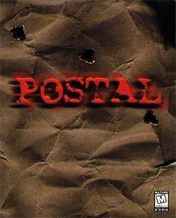
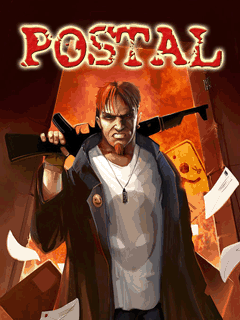
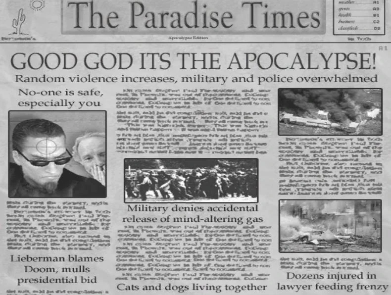
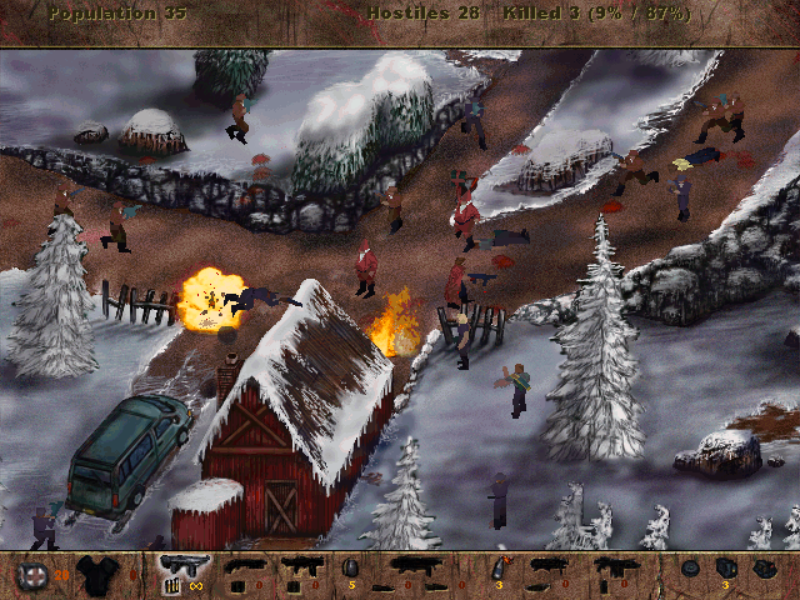
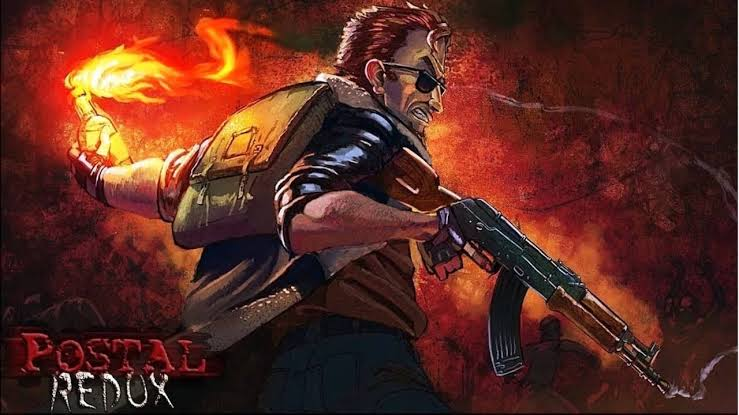
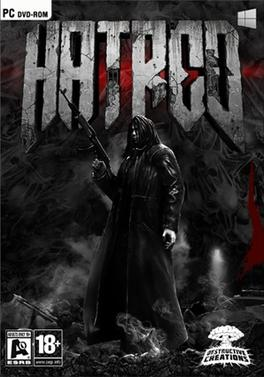
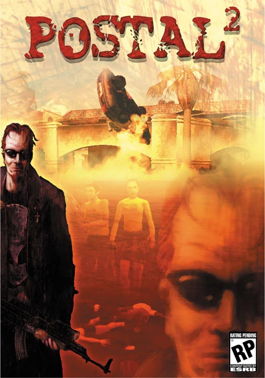
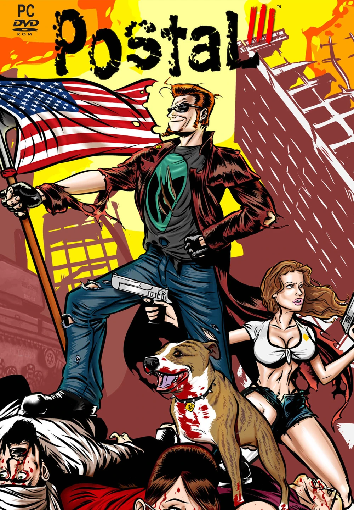
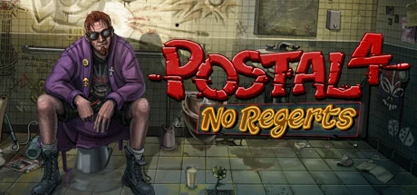
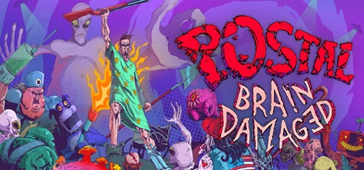

POSTAL



POSTAL (หรือที่รู้จักในชื่อGoing Postal ในยุโรป และPOSTAL: Going Over The Edgeในเนเธอร์แลนด์และเยอรมนี) เป็นเกมแรกในแฟรนไชส์POSTAL การพัฒนาเกมเริ่มต้นในปี 1996 และวางจำหน่ายในเดือนพฤศจิกายน 1997 โดยบริษัท Running With Scissors และ Ripcord Games ในขณะนั้น เกมนี้เป็นประเด็นถกเถียงอย่างมากเนื่องจากเป็นเกมจำลองการฆาตกรรมหมู่ ด้วยเนื้อหาที่น่าสยดสยอง เกมจึงถูกแบนในกว่า 10 ประเทศ
เนื้อเรื่อง
เนื้อเรื่องของเกม POSTALถูกทำให้คลุมเครือโดยเจตนา เพื่อไม่ให้เบี่ยงเบนความสนใจจากรูปแบบการเล่นเกมจากข้อมูลที่รวบรวมได้จากเว็บไซต์ต้นฉบับ คู่มือ และตัวเกมเอง ชายธรรมดาคนหนึ่งที่รู้จักกันในชื่อ "postal dude"ค้นพบว่าสารที่เปลี่ยนแปลงสภาพจิตใจได้ถูกปล่อยออกมาในเมืองพาราไดซ์ทำให้ผู้คนในเมืองคลุ้มคลั่งและกระหายเลือด ยิ่งไปกว่านั้น การถูกไล่ที่อย่างกะทันหันทำให้ postal dude เชื่อว่าตัวเองเป็นคนเดียวที่ยังมีสติอยู่ และจึงออกเดินทางเพื่อยุติความบ้าคลั่งในเมืองของเขา ซึ่งเขาเชื่อว่ามีต้นกำเนิดมาจากฐานทัพอากาศในท้องถิ่น เกมจบลงด้วยการที่Postal Dudeเกิดอาการทางจิต เขาพยายามฆ่ากลุ่มเด็กนักเรียนประถมในช่วงพักกลางวัน แต่ก็รู้ว่าอาวุธของเขานั้นไร้ประโยชน์ เพราะเด็กๆ ดูเหมือนจะไม่ได้รับผลกระทบใดๆ หลังจากหมดสติไป คาดว่าเขาถูกจับและถูกคุมขังในโรงพยาบาลจิตเวชเพื่อทำการศึกษา ฉากจบของภาพยนตร์แสดงให้เห็นแพทย์กำลังทำรายงานเกี่ยวกับสภาพจิตใจของเดอะดูด โดยกล่าวถึงปรากฏการณ์ "คลุ้มคลั่ง" และความเครียดจากชีวิตสมัยใหม่ที่สามารถผลักดันให้คนเราเป็นบ้าได้ ส่วนภาพของเดอะดูดที่นอนอยู่ในห้องขังบุผนัง ถูกมัดด้วยเสื้อรัดตัว บ่งบอกว่าเขาเป็นบ้ามาโดยตลอด
เกมเพลย์
เกมนี้เป็นเกมยิงมุมมองไอโซเมตริก โดยมีฉากต่างๆ ที่แสดงในมุมมอง 3/4 และมุมมองจากด้านบ เป้าหมายหลักของแต่ละด่านคือการสังหารศัตรูจำนวนหนึ่ง ซึ่งเรียกว่า " ผู้ก่อเหตุ " ผู้ก่อเหตุมีตั้งแต่ตำรวจถือปืนพก กลุ่มผู้ก่อการร้ายขว้างระเบิด หน่วย SWAT ถือปืนไรเฟิล และทหารยิงจรวด เป็นต้น นอกจากผู้ก่อเหตุแล้ว แต่ละแผนที่ยังมีพลเรือน ที่ไม่มีอาวุธจำนวนหนึ่ง ซึ่งผู้เล่นสามารถเลือกที่จะสังหารได้ การสังหารพลเรือนไม่มีรางวัลหรือบทลงโทษใดๆ นอกจากนี้ ผู้เล่นยังสามารถสังหารผู้ก่อเหตุ/พลเรือนที่ "ล้มลง" (อยู่ในสภาพใกล้ตายที่เป้าหมายคลานอยู่บนพื้นหลังจากถูกยิงหลายครั้ง) ซึ่งเป็นทางเลือกเสริมโดยไม่มีบทลงโทษหรือรางวัลใดๆ โดยพื้นฐานแล้ว เป้าหมายคือการเอาชีวิตรอดจากคลื่นของศัตรูในขณะที่สังหาร/ประหารพลเรือนมากหรือน้อยตามที่คุณต้องการ ตลอดแต่ละด่าน ผู้เล่นสามารถเก็บไอเทมอาวุธและยาเพิ่มพลังชีวิตเพื่อช่วยในการต่อสู้ได้ หลังจากกำจัดศัตรูได้ถึงเปอร์เซ็นต์ที่กำหนดในแต่ละด่าน ผู้เล่นต้องกดปุ่ม F1 เพื่อไปยังด่านต่อไป มี " อาณาจักร " ทั้งหมด สิบเจ็ดแห่ง นอกเหนือจากโหมดแคมเปญผู้เล่นคนเดียวแล้ว ยังมีโหมดท้าทาย (หรือที่เรียกว่า Gauntlet) และโปรแกรมแก้ไขระดับที่ผู้เล่นสามารถแก้ไขอาณาจักรที่มีอยู่ได้
ผู้เล่นหลายคน
เกมนี้มีโหมดผู้เล่นหลายคนสำหรับผู้เล่น 15 คน ซึ่งสามารถเล่นได้ทั้งแบบ LAN หรือผ่านเซิร์ฟเวอร์ RWS แต่เนื่องจากมีข้อผิดพลาดและปัญหาการเชื่อมต่อจำนวนมาก โหมดนี้จึงไม่ได้รับความนิยม มีโหมดทั้งหมดสามโหมด: Going Postal : โหมด Deathmatch ทั่วไป ผู้เล่น 2 ถึง 15 คนจะฆ่ากันเองในแผนที่ใดก็ได้ของด่านผู้เล่นคนเดียว ผู้เล่นที่ฆ่าได้มากกว่าจะเป็นผู้ชนะในตอนท้าย เกมชิงธง (Capture The Flag - CTF) : สองทีม (สีเขียวและสีเหลือง) จะถูกวางไว้ในจุดสุ่มของสนามประลอง และต้องชิงธงของฝ่ายตรงข้ามและนำกลับมายังจุดที่กำหนดไว้แบบสุ่ม ทีมที่ชิงธงได้อย่างน้อย 3 ครั้งจะเป็นผู้ชนะ โหมด "The March " เป็นโหมดท้าทาย ผู้เล่น 2-6 คนจะอยู่บนจุดเริ่มต้น แต่ห้ามทำร้ายกันเองเหมือนในโหมด "Going Postal" พวกเขาต้องสังหารพลเรือนให้ได้มากที่สุดในเวลาที่เร็วที่สุดเพื่อรับคะแนนที่แสดงบนหน้าจอด้านบน ผู้เล่นที่ได้คะแนนมากกว่าในตอนท้ายจะเป็นผู้ชนะ

ซานต้า แพทช์
ในเดือนธันวาคมปี 1997 ได้มีการปล่อยแพทช์พิเศษเพื่อให้เกม POSTALมีบรรยากาศคริสต์มาสมากขึ้น ซึ่งรวมถึงบทพูดใหม่สำหรับตัวละคร Postal Dude และศัตรูต่างๆ เปลี่ยนรูปลักษณ์ศัตรูให้เป็นซานตาคลอส เปลี่ยนรูปลักษณ์ของไอเทมขว้างให้เป็นของขวัญ และกวางเรนเดียร์ในรูปทรงนกกระจอกเทศ
เวอร์ชั่น Steam
เมื่อวันที่ 21 มีนาคม 2556 เกม POSTALได้ถูกนำกลับมาวางจำหน่ายอีกครั้งบน Steam พร้อมกับการอัปเดตหลายอย่างที่ทำให้เกมสามารถเล่นได้บนฮาร์ดแวร์รุ่นใหม่ ความละเอียดสูงขึ้น และรองรับหน้าจอกว้าง อย่างไรก็ตาม เวอร์ชันนี้ได้ตัดโหมดผู้เล่นหลายคนและตัวแก้ไขด่านออกไป
อัปเดต Twinstick
เมื่อวันที่ 5 ตุลาคม 2558 เกมได้รับการอัปเดตครั้งใหญ่ ซึ่งเพิ่มการรองรับคอนโทรลเลอร์แบบสองจอยสติ๊กอย่างถูกต้อง และการรองรับจอภาพไวด์สกรีน
อัปเดตชุมชนเนื่องในโอกาสครบรอบ 20 ปี
เมื่อ วันที่ 14 พฤศจิกายน 2017ด้วยความช่วยเหลือจากชุมชน POSTAL เกมได้รับการอัปเดตเพื่อฉลองครบรอบ 20 ปีของเกม ซึ่งนำมาซึ่งการปรับปรุงและเปลี่ยนแปลง "ภายใน" หลายอย่าง ที่เห็นได้ชัดที่สุดคือการนำด่าน Super POSTAL เวอร์ชันญี่ปุ่นกลับมา และระบบควบคุมการเล็งด้วยเมาส์ที่ทันสมัยคล้ายกับที่เห็นใน POSTAL Redux
Remake (POSTAL Redux)

POSTAL Redux วางจำหน่ายเมื่อวันที่ 20 พฤษภาคม 2016 Reduxพัฒนาโดยใช้ Unreal Engine 4 โดยเกือบทุกส่วนของเกมถูกสร้างใหม่ทั้งหมดในความละเอียดสูง และมีโหมด Rampage สไตล์เกมอาร์เคดแบบใหม่ พร้อมกับโหมดแคมเปญแบบร่วมมือกัน ตัวเกมส่วนใหญ่มีด่านต่างๆ เหมือนเดิม เพียงแค่ปรับปรุงใหม่ แต่ตอนจบแตกต่างจากเวอร์ชั่นดั้งเดิมมาก แทนที่จะเป็นเหตุการณ์ในโรงเรียนประถมที่ทำให้ The Dude เกิดอาการคลุ้มคลั่ง กลับกลายเป็นภาพที่ดูเหมือนจะเป็นงานศพของเขาเอง
Hatred (ภาคต่อเชิงจิตวิญญาณ)

เกมภาคต่อในเชิงจิตวิญญาณที่มีชื่อว่า Hatred ได้รับการประกาศเมื่อวันที่ 1 มิถุนายน 2013 ท่ามกลางกระแสวิพากษ์วิจารณ์อย่างมาก เกมนี้ได้รับการพัฒนาโดย Destructive Creations โดยไม่มีส่วนร่วมจาก Running With Scissors และวางจำหน่ายเมื่อวันที่ 1 มิถุนายน 2015 เกมนี้ประสบความสำเร็จในเชิงพาณิชย์และปัจจุบันได้รับการจัดอันดับ "ส่วนใหญ่เป็นบวก" บน Steam แม้ว่าจะได้รับคำวิจารณ์เชิงลบเป็นส่วนใหญ่ก็ตาม
h2>โอเพนซอร์สเมื่อวันที่ 28 ธันวาคม 2559 ซอร์สโค้ดถูกเผยแพร่สู่สาธารณะภายใต้ใบอนุญาต GPL2 สามารถดูซอร์สโค้ดได้ที่ลิงก์ด้านล่าง นอกจากการปล่อยซอร์สโค้ดแล้ว Running With Scissors ยังได้มอบเกม POSTALให้กับแฟนๆ เพื่อพัฒนาเกมให้ดียิ่งขึ้นไปอีก โดยม็อด/การปรับปรุงที่ดีที่สุดได้ถูกเพิ่มเข้ามาในการอัปเดตครบรอบ 20 ปีของชุมชนในปี 2017 นอกจากนี้ เกมยังเปิดให้เล่นฟรีบน Steam และ GoG และ WAVE ได้ปล่อยเวอร์ชันสำหรับ Dreamcast ในเดือนมิถุนายน ปี 2022
เกร็ดความรู้
- ในเวอร์ชันแผ่นดิสก์ดั้งเดิมของ เกม Postal ตัวละคร Postal Dude (โดยค่าเริ่มต้น เนื่องจากสามารถเปลี่ยนแปลงได้ในการตั้งค่าผู้เล่นหลายคน) สวมเสื้อโค้ทสีแดงแต่สีแรกในรายการ (เนื่องจากการตั้งค่าแสดงรายการตามหมายเลข) คือสีดำ (ซึ่งเป็นหมายเลขศูนย์)
- เกมนี้ขึ้นชื่อว่าเป็นเกมที่มืดมนและน่าสะพรึงกลัวที่สุดในซีรีส์ หลายคนที่คุ้นเคยกับPOSTAL 2หรือมุกตลกหยาบคายในเกม มักจะประหลาดใจเมื่อพบว่าภาคต่อและภาคแรกแตกต่างกันอย่างสิ้นเชิง
- เสียงที่ได้ยินในเกม ซึ่งพากย์เสียงโดย Rick Hunter ไม่ใช่เสียงของ Postal Dude แต่เป็นเสียงอื่น (คาดว่าเป็นเสียงปีศาจ) ในหัวของเขาที่คอยเยาะเย้ยและสั่งให้เขาฆ่า ซึ่งสามารถยืนยันได้จากข้อเท็จจริงที่ว่า ในไฟล์ของเกม เสียงนี้ถูกระบุว่าเป็น "ปีศาจ"
- เพลงประกอบเกม Central Park นั้นใช้ตัวอย่างเสียงจากชุดตัวอย่างเสียง Altered States โดยมีชื่อว่า "Is That The Door?" ตัวอย่างเสียงนี้ถูกนำไปใช้ในผลงานบันเทิงอื่นๆ ด้วย โดยเฉพาะอย่างยิ่งในเกม28 Days Laterและ Half-Life 2
- ในเครดิตท้ายเรื่อง มีชื่อของบุคคลหนึ่งที่ได้รับเครดิตในฐานะผู้รับผิดชอบ "เนื้อเรื่อง" และ "ข้อความในฉากคัตซีน" ซึ่งรู้จักกันในชื่อ "The Pain Killer" วินซ์ เดซี ได้เปิดเผยว่าบุคคลนี้คือ บิล คุนเคล ในพอดแคสต์ RWS
- ในเวอร์ชันแรก หากเกมตรวจพบว่ากำลังทำงานโดยไม่ได้ใส่แผ่นซีดี ตัวละครทุกตัวในด่านนั้นจะถูกไฟไหม้เพื่อเป็นการป้องกันการละเมิดลิขสิทธิ์
- ประโยค "WHAT?! You don't sell POSTAL?" ของ Postal Dude ตอนเริ่มเกม EZ mart เป็นการอ้างอิงถึงข้อเท็จจริงที่ว่าเกมดังกล่าวถูกขึ้นบัญชีดำในหลายร้านค้าเนื่องจากข้อโต้แย้งที่เกิดขึ้นเกี่ยวกับตัวเกม
POSTAL 2

POSTAL 2 (เขียนแบบมีสไตล์ว่าPOSTAL 2 ) เป็นเกมยิงมุมมองบุคคลที่หนึ่ง พัฒนาโดยRunning With Scissors เป็นภาคต่อของ POSTAL เกมนี้วางจำหน่ายเมื่อวันที่ 14 เมษายน 2546 สำหรับ Windows และได้รับความนิยมในกลุ่มผู้เล่นเฉพาะกลุ่มตั้งแต่นั้นมา
เนื้อเรื่อง
ผู้เล่นจะรับบทเป็น Postal Dude ชายร่างสูงผอม มีเคราแพะ สวมแว่นกันแดด เสื้อโค้ทยาวสีดำ และเสื้อยืดลายเอเลี่ยน Postal Dude อาศัยอยู่ในเมืองสุดเพี้ยนอย่างพาราไดซ์ รัฐแอริโซนา ทุกวัน ภรรยาของเขาจะสั่งให้เขาทำธุระหลายอย่าง ซึ่งเขาต้องทนกับการถูกด่าทอ ถูกปล้น ถูกผู้ประท้วงทำร้าย ถูกเจ้าของร้านสะดวกซื้อ/ผู้ก่อการร้าย ที่น่ารังเกียจ และลูกค้าที่แซงคิวรังแก รวมถึงวงดนตรีเดินขบวน มาสคอต ของเล่นฆาตกรชื่อครอตชี่ตำรวจและหน่วย SWAT หน่วย ATF และกองกำลังรักษาชาติลัทธิทางศาสนาฆาตกรโหดเหี้ยมผู้ก่อการร้ายตาลีบันโรคจิตและตัวแกรี่ โคลแมนเองด้วย หลังจากทำภารกิจต่างๆ ที่เกือบทำให้บุรุษไปรษณีย์ต้องติดคุกหรือถูกฆ่าตาย เมืองพาราไดซ์ก็เกิดความวุ่นวายโกลาหลอย่างหนัก (ตามที่กล่าวอ้าง) เนื่องจากการกระทำของเขาตลอดทั้งสัปดาห์ ขณะที่เขากำลังเดินกลับบ้าน เขาได้เห็นพลเรือนและเจ้าหน้าที่ตำรวจต่อสู้กันอย่าง ดุเดือด และ มีแมวตกลงมาจากฟ้า เขากลับถึงบ้านอย่างปลอดภัย แต่ปรากฏว่าเขาลืมซื้อของชิ้นสุดท้ายให้ภรรยา ดังนั้นเขาจึงยิงตัวเองที่ศีรษะเพื่อเลิกฟังคำบ่นของเธอ
เกมเพลย์
ด่านในเกมจะแบ่งตามวันในสัปดาห์ ได้แก่วันจันทร์วันอังคารวันพุธวันพฤหัสบดีและวัน ศุกร์ ในตอนต้นของแต่ละวัน ตัวละครหลัก (Dude) จะได้รับภารกิจหรือ "ธุระ" หลายอย่างให้ทำ เช่น "ไปซื้อนม " "สารภาพบาป" เป็นต้น ผู้เล่นสามารถทำภารกิจเหล่านี้ได้ตามต้องการ ไม่ว่าจะอย่างสุภาพเรียบร้อยหรือวุ่นวายที่สุดเท่าที่จะเป็นไปได้ และสามารถทำในลำดับใดก็ได้ เกมยังมีภารกิจพิเศษอีกสองอย่างที่จะเปิดใช้งานหลังจากทำธุระบางอย่างเสร็จสิ้น (ในวันพุธ) และในภายหลังหากตัวละครหลักทำการกระทำพิเศษบางอย่าง (ในวันศุกร์) ระหว่างภารกิจต่างๆ ผู้เล่นสามารถสำรวจเมืองพาราไดซ์ได้ ไม่ว่าจะก่อความวุ่นวายหรือแค่เดินเล่นไปเรื่อยๆ อย่างไรก็ตาม การทำภารกิจให้สำเร็จนั้นสำคัญมาก เพราะบางเขตและพื้นที่ของเมืองถูกปิดกั้น ทำให้ผู้เล่นไม่สามารถเข้าถึงได้จนกว่าจะถึงวันถัดไป เกมยังมีอาวุธให้เลือกใช้มากมาย ตั้งแต่พลั่วไปจนถึงเครื่องยิงจรวดกระจายอยู่ทั่วพาราไดซ์ นอกจากนี้ คุณยังสามารถปัสสาวะใส่คนได้ ซึ่งจริงๆ แล้วมีประโยชน์ เพราะมันจะทำให้ NPC เหล่านั้นหมดสติโดยการอาเจียนออกมา
เวอร์ชั่น Steam
บทความหลัก: POSTAL 2 ฉบับสมบูรณ์
หลังจากเกม Postal III วางจำหน่ายเกม POSTAL 2 ก็ถูกนำกลับมาวางจำหน่ายอีกครั้งบน Steam ผ่าน Steam Greenlight ในวันที่ 2 พฤศจิกายน 2012 เวอร์ชันนี้ได้รวมเกมหลักและส่วนเสริม
( Share the PainและApocalypse Weekend ) เข้าด้วยกัน เพิ่มฟีเจอร์ต่างๆ จาก ม็อด A Week in Paradiseอาวุธจาก ม็อด Eternal Damnationและรองรับ Steam Workshop ด้วย
เกร็ดความรู้
- ในเกมมีป้ายหลุมศพที่เขียนว่า "เนื้อเรื่องดั้งเดิมของ POSTAL ถูกฆ่าอย่างโหดเหี้ยมในปี 2002" ซึ่งบ่งบอกว่าเนื้อเรื่องในเกมนี้แทบไม่มีส่วนเกี่ยวข้องกับเกมภาคแรกเลย
- ในตอนหนึ่งของ ซีรีส์ Law & Order: Special Victims Unitได้กล่าวถึงการใช้แมวเป็นตัวเก็บเสียงสำหรับปืนลูกซองและปืนกล โดยการดันลำกล้องปืนเข้าไปในทวารหนักของมัน
- มีคำพูดเสียดสีและดูถูกโจ ลีเบอร์แมน มากมาย รวมถึงป้ายที่เขียนว่า "ลีเบอร์แมน พระเจ้าเห็นคำโกหกของคุณ" ระดับความยากที่ง่ายที่สุดคือ "โหมดลีเบอร์" และในหนังสือพิมพ์ฉบับสุดท้ายที่ประกาศวันสิ้นโลกในวันศุกร์ มีพาดหัวข่าวว่า "ลีเบอร์แมนโทษดูม " (หลังจากผู้เล่นตายหรือฆ่าตัวตาย หากปล่อยเกมทิ้งไว้โดยไม่รีสตาร์ทหรือโหลดเกมที่บันทึกไว้ ตัวละคร NPC ที่ยืนอยู่รอบศพจะพูดประโยคต่างๆ เช่น "ใครก็ได้โทรหาลีเบอร์แมน" และ "ฉันโทษดูม") ในทำนองเดียวกัน มีมุกตลกหลายอย่างที่มุ่งเป้าไปที่เดฟ กรอสแมนเช่น ร้านเกมอาร์เคดชื่อ "ร้านเกมอาร์เคดของกรอสแมน"
Postal III

Postal III (เขียนแบบมีสไตล์ว่าPostaL III ) เป็นเกมภาคที่สามที่วางจำหน่ายในซีรีส์ POSTAL แต่ต่อมาถูกบริษัทRunning With Scissors ปฏิเสธความเกี่ยวข้อง ด้วยเหตุนี้ เกมนี้จึงถูกจัดอยู่ในหมวดเกม "ภาคแยก" ที่ไม่เป็นส่วนหนึ่งของเนื้อเรื่องหลัก และได้รับการแก้ไขเนื้อเรื่องในเกม Paradise Lost และ POSTAL 4: No Regertsใน เวลาต่อมา
เนื้อเรื่อง
หลังจากทำลายเมืองพาราไดซ์ ด้วยระเบิดนิวเคลียร์ ใน ช่วงสุดสัปดาห์ แห่งหายนะเดอะ โพสทัล ดูด ก็พบว่าตัวเองอยู่ในเมือง แคทาร์ซิสเมืองพี่น้องของพาราไดซ์เงินหมดและต้องการเชื้อเพลิง เดอะ postal dude จึงหางานทำ ต่อไปนี้เป็นเรื่องราวสองเส้นที่แยกจากกันแต่มีอยู่จริง (เนื่องจากเดอะดูดมักจะอ้างอิงถึงการกระทำของเขาในเส้นทางที่แตกต่างกัน) ซึ่งรู้จักกันในชื่อเส้นทางที่ดีและเส้นทางที่บ้าคลั่ง
เกมเพลย์
แตกต่างจากภาคก่อนๆ Postal III เล่นในมุมมองบุคคลที่สามแบบมองข้ามไหล่ พร้อมระบบการหลบซ่อนและการฟื้นฟูพลังชีวิต อีกหนึ่งการเปลี่ยนแปลงที่เห็นได้ชัดคือPostal IIIมีเส้นทางการเล่นที่ค่อนข้างเ ป็นเส้นตรงเมื่อเทียบกับ POSTAL 2 โดยองค์ประกอบของโลกเปิดจะอยู่ในโหมดสำรวจอิสระที่ต้องปลดล็อกก่อน นอกจากการนำองค์ประกอบการเล่นเกมและอาวุธกลับมาแล้ว เกมยังนำเสนอ Segway เป็นยานพาหนะ พร้อมกับระบบศีลธรรมที่ขึ้นอยู่กับว่าผู้เล่นใช้การกระทำ ที่รุนแรงหรือไม่รุนแรงเมื่อผ่านด่าน ซึ่งส่งผลต่อเนื้อเรื่องนำพาตัวละครหลักไปสู่เส้นทางที่ดี คือเข้าร่วมกองกำลังตำรวจ Catharsisหรือเส้นทางที่บ้าคลั่ง คือเข้าร่วมกลุ่มนักนิเวศวิทยาโดยแต่ละเส้นทาง จะมีตอนจบที่เป็นเอกลักษณ์ของตัวเอง
การอัปเดต
เมื่อวันที่ 21 พฤศจิกายน 2022 เกมดังกล่าวถูกถอดออกจาก Steamเนื่องจากปัญหาเกี่ยวกับระบบ DRM ของ ActControl เซิร์ฟเวอร์การเปิดใช้งานล่มด้วยเหตุผลที่ไม่ทราบสาเหตุ ทำให้ Steam ไม่สามารถสร้างคีย์ที่จำเป็นสำหรับการเล่นเกมได้ นอกจากนี้ยังหมายความว่าผู้ที่ซื้อเกมเวอร์ชันแผ่นไม่สามารถเปิดใช้งานสำเนาของตนผ่าน ActControl หรือ Steam ได้เช่นกัน สิบเดือนต่อมา ในวันที่ 29 กันยายน 2023 RWS ได้รับสิทธิ์การเข้าถึงร้านค้าเกมแบบจำกัดจากผู้จัดจำหน่าย Akella ซึ่งปัจจุบันล้มละลายไปแล้ว ต่อมาในวันที่ 13 ตุลาคม 2023 เกมได้ถูกนำกลับมาวางจำหน่ายบน Steam อีกครั้ง พร้อมกับการปรับปรุงต่างๆ เช่น แก้ไขข้อผิดพลาดที่ทำให้เกมหยุดทำงาน ปรับปรุงประสิทธิภาพ และอื่นๆ อีกมากมายด้วยความช่วยเหลือจากนักพัฒนาของ Zoom นอกจากนี้ยังเพิ่มปืนตด (Fart Gun)เข้ามาในเกม ซึ่งเดิมทีเป็นไอเทมพิเศษสำหรับผู้ที่สั่งซื้อล่วงหน้าเท่านั้น จนถึงปัจจุบันPostal III ยังคงได้รับการสนับสนุนบนทั้งแพลตฟอร์ม Steam และ Zoom และยังคงได้รับการอัปเดตอย่างต่อเนื่องด้วยการแปลภาษาใหม่และการแก้ไขข้อบกพร่อง ต่อมา เพลงประกอบเกมก็วาง จำหน่ายบน Steam ในรูปแบบ MP3 และ FLAC ด้วย
เกร็ดความรู้
- ในเวอร์ชันดั้งเดิม เพลง "Goodbye Almond Eyes" เวอร์ชันรีมิกซ์ของ Tokyo Rose ถูกนำมาใช้ในภารกิจ Porn World และ Jennifer Walcott Bodyguard แต่ต่อมาได้มีการแก้ไขและตัดออกไป เนื่องจาก Akella ไม่มีลิขสิทธิ์ อย่างไรก็ตาม เพลงนี้ยังคงมีอยู่ใน คู่มือ เกม Postal III เวอร์ชัน อเมริกา ซึ่งระบุรายชื่อเพลงประกอบทั้งหมดไว้
- เพลงที่เข้ามาแทนที่ "Goodbye Almond Eyes" คือ "Illegal Makarov Recipe" โดยThe Hens ซึ่งดูเหมือนจะเป็นเพลงเทคโนที่ดัดแปลงมาจากเพลง "Ride of the Valkyries" ของริชาร์ด วากเนอร์
- เวอร์ชันรัสเซียมีอาวุธ DLC พิเศษสำหรับผู้ที่สั่งซื้อล่วงหน้าชื่อว่าปืนตด (Fart Gun ) ซึ่งไม่มีจำหน่ายในเวอร์ชันสากล อย่างไรก็ตาม สามารถดัดแปลงเกมเพื่อเพิ่มปืนตดเข้าไปในเวอร์ชันสากลได้ ต่อมาปืนตดถูกเพิ่มเข้ามาในเวอร์ชัน Zoom Platform แต่ถึงแม้จะมีการกล่าวถึงในบันทึกการเปลี่ยนแปลงบน Steam แต่ปืนตดก็ไม่ได้ถูกเพิ่มเข้ามาในเวอร์ชัน Steam จนกระทั่งมีการอัปเดตเมื่อวันที่ 29 มกราคม 2024 จึงได้ถูกเพิ่มเข้ามาในเวอร์ชัน Steam ในที่สุด
- บนเว็บไซต์ Running With Scissors การคลิกที่ลิงก์ซึ่งระบุว่าจะนำไปยัง หน้า ของ Postal IIIจะนำคุณไปยังวิดีโอ YouTube ของ Rick Astley ในเพลง "Never Gonna Give You Up" แทน
- เกมดังกล่าวถูกลบออกจากไทม์ไลน์อย่างเป็นทางการของ POSTAL อย่างมีประสิทธิภาพ ผ่าน การแก้ไขเนื้อเรื่องใน Paradise Lost ซึ่งเปลี่ยนเหตุการณ์ในเกมให้เป็นเพียงฝันร้ายที่เดอะดูดฝันระหว่างที่อยู่ในอาการโคม่าเป็นเวลา 11 ปี
- ในเกม POSTAL 2มีความสำเร็จสองอย่างที่ล้อเลียนเกม POSTAL III:
- "ช่างมันเถอะ เกมนั้น!" ได้รับรางวัลโดยการปัสสาวะใส่สำเนาเกมในลานขยะ
- "ดีกว่า POSTAL III" ได้รับรางวัลเมื่อเล่นเกม Paradise Lost จนจบ
- POSTAL 4: No Regertsยังคงสานต่อแนวทางเดิมด้วยภารกิจ Rampage ที่เพิ่มเข้ามาในเวอร์ชัน 1.0.5 ซึ่งกำหนดให้คุณต้องปัสสาวะหรือเผา สำเนาเกม Postal IIIในบ่อขยะในเม็กซิโกเพื่อปลดล็อกชุด PIII Outfit
POSTAL 4: No Regerts

POSTAL 4: No Regerts (เขียนแบบมีสไตล์ว่าPOSTAL 4 No Regerts)เป็นเกมลำดับที่สี่ในซีรีส์ POSTAL เปิดให้เล่นในรูปแบบ Early Access เมื่อวันที่ 14 ตุลาคม 2019 และเวอร์ชัน 1.0 วางจำหน่ายอย่างเป็นทางการเมื่อวันที่ 20 เมษายน 2022
เนื้อเรื่อง
หลายปีหลังจากเหตุการณ์ใน Paradise Lostเดอะโพสตัล ดูด และ แชมป์เพื่อนคู่ใจของเขาขับรถไปอย่างไร้จุดหมายในทะเล ทรายที่ร้อนระอุของรัฐแอริโซนาเพื่อมองหาสถานที่ใหม่ที่จะเรียกว่าบ้าน ระหว่างแวะพักที่ปั๊มน้ำมัน รถและรถพ่วงของโพสตัล ดูดถูกขโมยไป เหลือเพียงเสื้อคลุมอาบน้ำตัวเดียว ด้วยความต้องการเงินสด พวกเขาจึงมุ่งหน้าไปยังเมืองอีเดนซิน ที่อยู่ใกล้เคียง เพื่อหางานทำ และหวังว่าจะได้พบกับบ้านที่เขาตามหามานาน เรื่องราวต่อไปนี้คือห้าวันแห่งความวุ่นวายในการทำงานให้กับเจ้านายห้าคน: โจเซฟ เบลโลว์ตัวแทนจัดหางานที่เป็นมิตร (แต่ก็ดูน่าขนลุก) ในวันจันทร์เอล ปลาโกหัวหน้าแก๊งค้ายาเม็กซิ กันผู้โหดเหี้ยมและได้รับแรงบันดาลใจจากเบน ในวันอังคารไมค์ เจนายกเทศมนตรีเมืองอีเดนซินผู้ชื่นชอบโถชำระล้าง ในวันพุธวินซ์ เดซีหัวหน้าแก๊งซินดิเคท มาเฟียท้องถิ่น ในวันพฤหัสบดี และเดอะบอสหัวหน้าผู้ลึกลับที่ควบคุมเมืองอีเดนซินจากเงามืด ในวันศุกร์
เกมเพลย์
POSTAL 4เป็นเกมยิงมุมมองบุคคลที่หนึ่งที่ดำเนินรอยตามPOSTAL 2 โดยแบ่งด่านออกเป็นวันต่างๆ ได้แก่ วันจันทร์ วันอังคารวันพุธวันพฤหัสบดีและวัน ศุกร์ ในแต่ละวัน พนักงานส่งของจะได้รับภารกิจต่างๆ (เรียกว่า "errands" ในPOSTAL 2 ) ให้ทำ ภารกิจเหล่านี้สามารถทำได้ทั้งแบบใช้ความรุนแรงหรือไม่ใช้ความรุนแรง นอกจากนี้ยังมีภารกิจเสริมให้ผู้เล่นทำเพื่อรับเงินสดและยังมีภารกิจสุ่มให้ผู้เล่นทำเพื่อรับรางวัลเพิ่มเติม เมื่อผู้เล่นทำภารกิจต่างๆ เสร็จสิ้น พื้นที่ต่างๆ ใน Edensin ก็จะเปิดให้สำรวจมากขึ้น เมืองอีเดนซินทั้งหมดแบ่งออกเป็นเก้าเขต ได้แก่ เขตเรือนจำ เขตที่พักอาศัย เขตริมแม่น้ำ เขตประวัติศาสตร์ เขตเดอะแซ็ก เขตคนมั่งคั่ง เขตชายแดน เขตพาณิชย์ และเขตอุตสาหกรรม
เกร็ดความรู้
- ปกแรกและการออกแบบตัวละคร "เดอะ ดูด" เป็นการแสดงความเคารพต่อภาพยนตร์เรื่อง"เดอะ บิ๊ก เลโบวสกี้ " ซึ่งตัวละครเอกอย่าง เจฟฟรีย์ เลโบวสกี้ ก็มีชื่อเล่นว่า "เดอะ ดูด" เช่นกัน
- จากข้อมูลในส่วนคำถามที่พบบ่อย (FAQ) ของเว็บไซต์ Running with Scissors เกมนี้เริ่มต้นมาจากการนำเกมPOSTAL 2 มาทำใหม่ โดยใช้ชื่อว่า "POSTAL 2x2"
- เดิมที โมเดลของรถไฟเหาะตีลังกา Womb Coaster มีรูปเด็กทารกที่มีอวัยวะเพศชายโผล่ออกมา แต่ทีมงานได้ลบออกไปก่อนที่จะสรุปแผนที่ในเกม เนื่องจากพวกเขามีจุดยืนเกี่ยวกับเนื้อหาประเภทใดที่ยอมรับ ได้และยอมรับไม่ได้ในเกม (เช่น เนื้อหาที่เกี่ยวข้องกับความรุนแรง/เพศและเด็ก หรือการล่วงละเมิดทางเพศแบบโต้ตอบ)
- ชื่อเรื่องสะกดผิดโดยเจตนา เนื่องจากสิ่งเดียวที่พวกเขารู้สึกเสียใจคือ POSTAL 3
POSTAL: Brain Damaged

POSTAL: Brain Damaged เป็นเกมภาคแยกใน ซีรีส์ POSTAL พัฒนาโดย HYPERSTRANGE และ CreativeForge Games และจัดจำหน่ายโดย Running with Scissors และ HYPERSTRANGE เกมนี้วางจำหน่ายบน PC เมื่อวันที่ 9 มิถุนายน 2022 วางจำหน่ายบน PlayStation 4/5 เมื่อวันที่ 25 ตุลาคม 2023 และวางจำหน่ายบน Nintendo Switch เมื่อวันที่ 2 กุมภาพันธ์ 2024 นอกจากนี้ยังมีส่วนเสริม DLC ชื่อ These Sunny Daze วางจำหน่ายบน Steam เมื่อวันที่ 9 กันยายน 2025
เนื้อเรื่อง
เกมนี้จะพาคุณเข้าไปสัมผัสความคิดของPostal Dudeในขณะที่คุณต่อสู้ฝ่าฟันกับศัตรูและบอสสุดพิสดารมากมายตลอดสามตอน
เกมเพลย์
เกมนี้ ถูกเรียกว่า " Boomer Shooter "
ซึ่งได้รับแรงบันดาลใจอย่างมากจากเกม FPS
คลาสสิกอย่างDoomและQuakeดังนั้น ระดับต่างๆ
จึงมีขนาดใหญ่และมีทางออกที่ผู้เล่นต้องหาให้เจอเพื่อผ่านด่าน การเคลื่อนไหวของผู้เล่นลื่นไหลกว่าเกม FPS POSTAL ภาคหลัก และภาพกราฟิกได้รับแรงบันดาลใจจากสไตล์เรโทร เนื่องจากเกมดำเนินเรื่องในโลกแห่งความฝันของ Dude (หรือ "Dudescape" ก็ได้) อาวุธที่ใช้ได้หลายอย่างจึงดูแปลกประหลาด (เช่น ปืนลูกซอง Super Hooker) พร้อมโหมดการยิงพิเศษที่ไม่เหมือนใคร ไอเท็มต่างๆ กลับมาอีกครั้ง รวมถึงความสามารถในการปัสสาวะ ศัตรูยังถูกเรียกว่า
"Hostiles" ซึ่งเป็นการอ้างอิงถึงเกม POSTAL ภาคแรก
โดยยึดตามแบบอย่างของ Doom เกมนี้แบ่งออกเป็นสามตอน โดยแต่ละตอนมีห้าด่านในเกมหลัก และมีตอนพิเศษเพิ่มเติมอีกหนึ่งตอนที่มีสี่ด่านใน DLC:
- American Dream Gone Wrong
- Soulless Asylum
- No-Life Matters
- These Sunny Daze
เกร็ดความรู้
- เนื่องจากผู้พัฒนาเป็นบริษัทจากโปแลนด์ เกมนี้จึงอาจถูกมองว่าเป็นเกมประเภท "Slav Jank"
- ในหน้า Steam ของเกมที่อยู่ในระหว่างการพัฒนา ระบุว่าเกมนี้มีเสียงพากย์ภาษาโปแลนด์ อย่างไรก็ตาม เสียงพากย์นี้น่าจะถูกยกเลิกไปแล้ว เพราะตอนนี้เกมมีเฉพาะเสียงพากย์ภาษาอังกฤษเท่านั้น
- เกมนี้เป็นเกมเดียวในซีรีส์ POSTAL ที่มีคะแนน Metacritic สูงกว่า 60 โดยปัจจุบันมีคะแนนอยู่ที่ 71
- ข่าวลือเกี่ยวกับการวางจำหน่ายเกม Postal บน Xbox ถูกปฏิเสธโดย Running With Scissors โดยระบุว่า Microsoft จะไม่อนุมัติเกม Postal ใดๆ สำหรับ Xbox